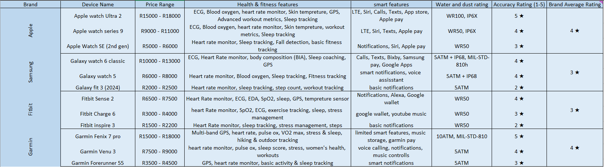
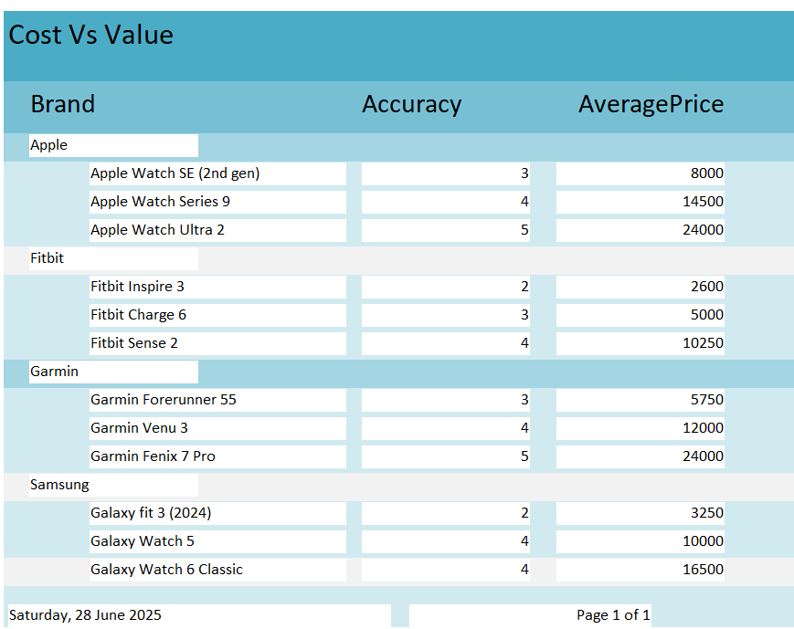
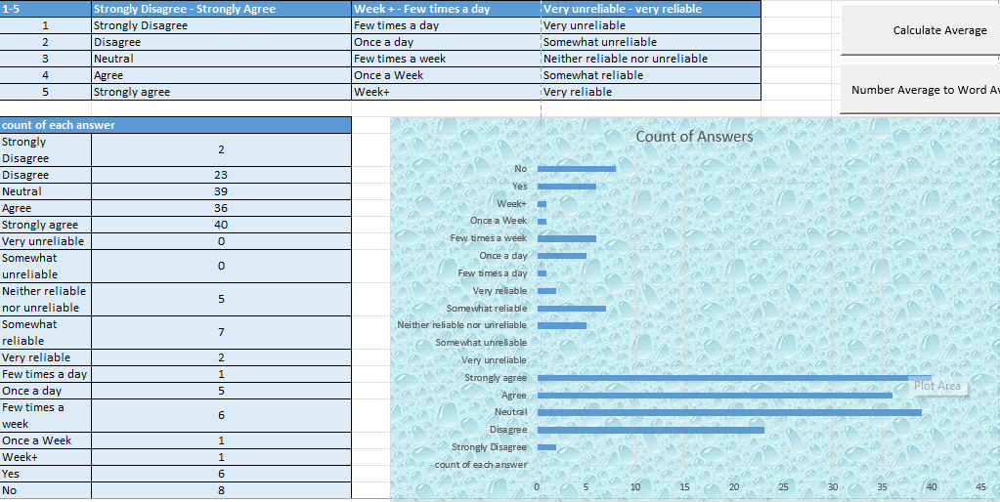

| About | Final Report | Access Database | Excel Spreadsheet | Survey | Resources and References |
Smart wearable Technologies have emerged as one of the most influential advancements in personal technology. It offers many powerful tools to monitor their health, fitness, and even their daily habits – all attached to their person in a small form factor. From fitness trackers and smart watches to smart glasses and rings, these devices provide real-time data and feedback, supporting improved well-being and lifestyle awareness.
This report forms the Phase 2 of my PAT and builds upon the research and planning conducted within my Phase 1.
The key focus is to determine how smart wearable technologies are being used today, and how do factors like cost, functionality, user perception, and innovation influence their adoption and effectiveness. To do this, I have collected data from real users via a structure survey and compiled comparative data on popular devices from this industry.
In this phase, I have used 4 packages to organize and present my data: Microsoft Word, Microsoft Access, Microsoft Excel, HTML website. Queries with calculated fields were made to extract some meaningful data, Reports were used to summarize the results by grouping relevant fields, etc. This analysis report will set the foundation where all of my data will be presented in a well-structured and functional HTML website.
The smart wearable technology industry has grown rapidly through the past years, with a wide range of devices designed to meet various needs. These devices include smart watches, fitness trackers, smart rings, smart glasses, wearable medical devices and more. Each category serves different functions, from tracking physical activity and sleep to offering real-time health monitoring and communication.
Leading companies in this space includes Apple, Fitbit, Samsung, Garmin, Huawei, Xiaomi, and Google. Each of them competing to deliver more accurate sensors, better connectivity, and improved user experience.
A key distinction in the industry lies between consumer-grade and medical-grade wearables. While consumer-grade devices focus on general wellness and lifestyle, medical-grade devices must meet much stricter standards and certifications (like FDA approval) to ensure clinical accuracy.
Understanding this landscape helps to provide context for the rest of this report, particularly when comparing functionality, accuracy, and value of different wearable options.
|  |
The development of smart wearables over the past decade has been marked by continuous innovation and strategic industry shift. In 2015, the launch of the first-generation Apple Watch introduced smartwatches into a mainstream audience. In just a year later, Fitbit acquiring Pebble signalled the start of some major consolidations within the industry. Garmin’s Fenix 5, released in 2017, brought incredible durability and many advanced fitness tracking features to outdoor enthusiasts. In 2018, the Apple Watch Series 4 made headlines by introducing ECG functionality, pushing wearables into the health monitoring space. In 2019, WHOOP had grown popularity among professional athletes for its deep recovery insights, and in 2020, the Oura Ring become widely recognized during COVID-19 for its health tracking and early illness detection features. In 2021, Google acquired Fitbit, and by 2022 they had partnered with Samsung to create Wear OS 3, a unified operating system for wearables. In 2023, the Apple Watch Ultra was release. It was an ultra-premium wearable focused on performance and endurance. In 2024, AI powered features had become a standard in many devices, offering more personalized health recommendations and predictive statistics. And now, in 2025, smart wearables have started expanding into mental health monitoring, with features like stress tracking and guided mindfulness sessions. This just demonstrates how far the technology has come – from basic step counters to comprehensive health companions. But how far does it still need to go?
| 2015 | 2016 | 2017 | 2018 | 2019 | 2020 | 2021 | 2022 | 2023 | 2024 | 2025 |
|---|---|---|---|---|---|---|---|---|---|---|
| Apple Watch (1st Gen) Launches | Fitbit Acquires Pebble | Garmin Fenix 5 Released | Apple Watch Series 4 Adds ECG | WHOOP Grows With Pro Athletes | Oura Ring Gains Spotlight During COVID-19 | Google Acquires Fitbit | Samsung & Google Collab On Wear OS3 | Apple Watch Ultra Introduced | AI-Powered Wearables Go Mainstream | Smart Wearables Expand into Mental Health |
To evaluate the value of various smart wearable devices, an Access report was created from an Access query to compare the average price against the accuracy rating for budget, midrange, and high-end devices (with a focus on smart watches). Devices like the Garmin Fenix 7 pro and Apple Watch Ultra 2 stand out at the top end, offering perfect accuracy ratings of 5/5 but at a high average price of R24000. In contrast, more affordable devices such as the Fitbit Inspire 3 and Galaxy Fit 3 (2024) come in with average prices below R3500 but have much lower accuracy ratings of 2. The Fitbit Charge 6 and Garmin Forerunner 55 strike a nice middle ground, offering a nice balance between accuracy (rating of 3) and moderate pricing around R5000.
The Fitbit Sense 2 and Garmin Venu 3 offer a high accuracy rating (4) at a significantly lower price compared to some of the more premium models. These models may offer the best value for users that want functionality without paying extra for premium features. From this, we can conclude that higher cost obviously correlates with higher accuracy, but some midrange devices often offer better competitive value.
|  |
The survey offers some insight into how the general users will use their selected products. Across all participants, responses to questions 1-10, show a generally positive experience which all questions scoring an average score of 3.5 (for agree) or higher. The highest scoring questions were questions 10 and 7 with average score of 4,07 and 3,93 respectively. This indicates that most users do believe that smart wearables have positively impacted their lives.
Questions such as 1, 2 and 4 with their scores 3,86; 3,64; and 3,64 respectively, suggest that users often wear their devices and find that they have adequately helped them stay active. Some slightly lower averages for questions 3 and 5 with scores of 3,50 can indicate that while users are pretty aware of their sleep patterns and actively motivated by their device, these features are less impactful compared to fitness tracking. Question 9 being the lowest average which asked if the device helps prevent health issues, shows that users see their devices as tracking tools rather than proactive health solutions.
When asked about privacy, users responded with interesting results. It had a low average of 0,43 (0 for no and 1 for yes). This shows that less than half of the respondents actually consider privacy as a major factor when deciding which wearable to go with. This accompanying written response shows a wide variety on reasons why which range from strong privacy concerns to complete indifference. This could either represent the need for clearer communication around data use by manufacturers or that people, when push comes to shove, don’t genuinely care.
The average score for when users were 2,71 which translates to most users only needing to charge their devices a few times a week, which does align with the current industry standards. And lastly when asked about reliability users rated it highly with an average of 3,79, confirming that users trust their devices to perform consistently.
This data reflects that users are engaged and mostly satisfied with their devices. Users often rely on their devices for fitness tracking rather than general health tracking showing there is room for improvement there, either by incorporating new meaningful features or creating awareness of what is possible.
The next 2 pictures show the results from the survey, and you may find this table on the excel document “Smart Wearable Technologies Excel” on the sheet named “Survey Results.”
| |
 |
While smart wearables have been widely praised for their convenience and health-tracking features, both survey data and research reveal that there are several limitations that can impact a device’s long-term effectiveness and adoption.
This is often one of the most critical issues. From the survey in question 13, the average response was 2.71 indicating that most users charge their devices between everyday and a few times a week. The frequent need for charging can become a huge inconvenience, especially for those that rely on continuous tracking throughout day and night. Devices with shorter battery life also tend to rank lower on reliability scores, which can lead to an overall reduced trust and eventual disengagement from usage.
Another major challenge is the long-term user engagement. Several industry sources and survey feedback suggest that after the initial excitement wears off, many users often find themselves not wearing their devices anymore because of the combined effects of charging needs, discomfort, and/or lack of perceived value. The device’s usability and motivation are major areas for improvements.
Many consumer grade wearables still struggle with accuracy, especially for users with darker skin tones, tattoos, or excessive sweat and for devices needing to be thinner and smaller after each iteration. In the survey, question 9 asked about how the users feel that their device helps prevent health issues. This question had one of the lowest average scores (3,14), indicating that users are often sceptical about the medical accuracy of these devices.
Privacy is a very divided area. While most people from the survey didn’t let privacy effect their decision as much on which wearable to get. Some of the written responses show that users don’t fully understand how their data is being collected but most seem to be concerned but accept it as a trade-off for the device’s functionality. Some users said that they prefer brands with clear privacy policies and data encryption, while others just said that it has never mattered to them or that they just don’t think about it. This can indicate that while privacy isn’t always a priority, there still needs to be some improvements for transparency regarding a user’s privacy.
Lastly, device comfort and durability can also be barriers for how well a device is adopted. Users often report skin irritation, especially with bigger models, and many premium devices are expensive, limiting accessibility. Cross compatibility between brands also is a huge issue that exists, which can frustrate users who want to use third-party apps or to switch platforms.
As smart wearables evolve, industry research and expert analysis predicts a few exciting trends. The next generation of wearables is expected to focus on advanced health features, more personalisation, and seamless integration.
In 2025, wearables have already begun expanding into mental health monitoring, using biometric signals to track stress levels, emotional responses, and sleep quality. Future devices are expected to offer real-time mental wellness insights, such as guided breathing, mood prediction, and early indicators of burnout and/or anxiety.
AI is at the forefront of innovation in this field. AI integration allows for personalized treatment and an early detection of health risks. Future wearables will likely include adaptive coaching which automatically adjusts goals based on user behaviour, rather than just static metrics.
Wearables are already become more tailored to each individual, with future designs expecting to use AI to adapt interfaces, suggest health routines, and integrate more with the smart home ecosystem, voice assistants, and mobile devices. Cross-compatibility is also expected to improve which will allow for smoother syncing across brands and services.
Battery life remains one of the key limitations as seen in the survey. Advancements in low-power processors, solar charging, and wireless power transfer are likely to enhance a devices longevity. Meanwhile, sensors are becoming increasingly precise and non-invasive, with future versions expected to measure things like blood pressure, hydration levels, glucose and mood.
Beyond health tracking, some future wearables are expected to integrate AR and VR features. Smart glasses and headset already exist but are somewhat limited in what they can offer at the moment. In the future they may offer immersive experiences for fitness, gaming, and remote work.
Smart wearable technologies today are primarily used as health and fitness companions, which help users track vital metrics such as heart rate, sleep, steps, and activity level. The survey results show that users are generally happy with their devices , especially when it comes to fitness tracking and routine engagement, but there are still major areas for growth in areas like preventative measures and long-term motivation.
Functionality plays a key role in how users adopt their devices. Devices that offer meaningful, easy to use features with reliable performance tends to rate higher in user satisfaction. The cost, while still a limiting factor, isn’t always proportional to a devices value. Midrange devices like the Fitbit sense 2 and Garmin Venu 3 demonstrates that high accuracy can be achieved at a lower cost.
User perception is influenced by factors such as battery life, comfort and privacy. Many of the respondents prioritize performance over data security, although privacy does remain as a slight concern. Ongoing innovations such as AI integration, mental wellness tracking and AR/VR capabilities, continues to shape the future of wearables and pushing them beyond step counters and into proactive health and lifestyle tools.
In conclusion, smart wearable technologies are widely adopted and actively used, but their long-term success depends on balancing functionality, price, trust, and innovation to meet the evolving needs of its users.
You can access the full report here